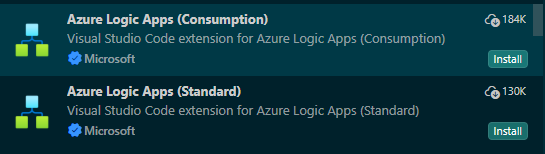

What it covers
Menu-by-menu guidance for Workflows, Connections, Parameters, Artifacts, deployment features, settings, monitoring, and governance tools.
Choose between the Azure portal for browser-based authoring and Visual Studio Code for a local, source-controlled Standard development workflow.

The portal designer supports both Consumption and Standard workflows. Start by choosing the hosting model that fits the workload, because that choice affects the resource boundary, billing, networking, and available workflow types.

Microsoft Learn currently documents separate VS Code experiences for Consumption and Standard, and both extensions can be installed at the same time:
A Standard project contains one folder per workflow with a workflow.json file, plus project-level files such as host.json and connections.json. Keep local.settings.json out of source control because it can contain local secrets and connection values.
| Scenario | Best fit | Why |
|---|---|---|
| First workflow or quick prototype | Portal | Visual and immediate, with minimal local setup. |
| Standard engineering workflow with source control | VS Code (Standard extension) | Best-practice path for SDLC and CI/CD, including workflow versioning, pull request review, release promotion, and rollback. |
| Consumption workflow authoring | Portal | Use the portal as the primary authoring path. Avoid the Consumption extension for new development due to legacy dependencies and low maintenance activity. |
| Quick inspection of a deployed workflow | Portal | Fast access to run history, designer, and operational surfaces. |
You can debug Logic Apps in both experiences, but the debugging model is different:
| Tool | Debugging capability | Best use |
|---|---|---|
| Azure portal | Operational debugging through run history, trigger history, action-level inputs/outputs, diagnostics logs, and run resubmission. For Standard stateless workflows, you can temporarily enable Debug state to view partial run history. | Investigating failures in deployed workflows, validating production behavior, and troubleshooting with telemetry. |
| VS Code (Standard extension) | Local developer debugging with breakpoints in workflow.json (actions), Start Debugging (F5), step inspection, and local run/test loops. | Pre-deployment development, step-through troubleshooting, and fast iteration during SDLC. |
Even when you work in the designer, a workflow is backed by a JSON definition that can be versioned, reviewed, and deployed. This simplified Standard workflow.json example defines a stateful request-response workflow:
{
"definition": {
"contentVersion": "1.0.0.0",
"triggers": {
"When_a_request_is_received": {
"type": "Request",
"kind": "Http"
}
},
"actions": {
"Send_response": {
"type": "Response",
"kind": "Http",
"inputs": {
"statusCode": 200,
"body": {
"message": "Workflow completed"
}
},
"runAfter": {}
}
},
"outputs": {}
},
"kind": "Stateful"
}
workflow.json. Connection metadata, parameters, host settings, schemas, maps, and deployment configuration can all affect runtime behavior.Standard supports an application-style deployment model. Provision the Logic App resource and its dependencies with infrastructure as code, then package and deploy the workflow project as a versioned application artifact.
| Deployment layer | Typical contents | Release behavior |
|---|---|---|
| Infrastructure | Hosting plan, Logic App resource, storage, monitoring, networking, identities, role assignments, API connections, and access policies | Deploy through reviewed infrastructure changes before the app depends on them. |
| Application | Workflow folders, workflow.json, connections.json, host.json, maps, schemas, assemblies, and other project artifacts | Build once, zip the project contents at the artifact root, and promote the same immutable package. |
| Environment configuration | Azure app settings, connection endpoints, resource IDs, feature settings, and Key Vault references | Inject values per environment; do not promote local credentials. |
local.settings.json is for local execution and can contain secrets. Exclude it from source control and supply equivalent Azure app settings through the deployment pipeline or infrastructure definition.Endpoints and resource IDs change between development, test, and production. Reference app settings from connections.json and workflow parameters instead of embedding environment-specific values in workflow definitions.